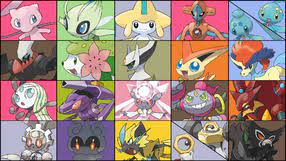
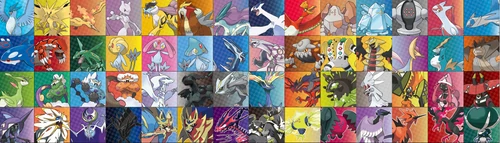
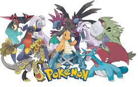
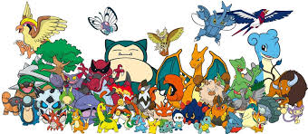

Mythicals are rare pokemon in Pokemon games but still obtainable. Some are through side-stories, post-game, and even special events. They are rarely seen in the Pokemon world. These Pokemons are Mew, Celebi, Jirachi, Deoxys, Manaphy, Phione, Darkrai, Shaymin, Arceus, Victini, Keldeo, Meloetta, Genesect, Diancie, Hoopa, Volcanion, Magearna, Marshadow, Zeraora, Meltan, Melmetal, and Zarude.
Legendaries are pokemon that everyone will encounter in their run of the game. Their gender is unknown. These Pokemon are Articuno, Zapdos, Moltres, Mewtwo, Raikou, Entei, Suicune, Lugia, Ho-oh, Regiice, Registeel, Regirock, Latias, Latios, Groudon, Kyogre, Rayquaza, Azelf, Mesprit, Uxie, Dialga, Palkia, Giratina, Cresselia, Heatran, Regigigas, Cobalion, Terrakion, Virizion, Tornadus, Thunderus, Landerus, Reshiram, Zekrom, Kyurem, Xerneas, Yveltal, Zygarde, Type: Null, Silvally, Tapu Koko, Tapu Lele, Tapu Fini, Cosmog, Cosmoem, Solgaleo, Lunala, Necrozma, Zacian, Zamazenta, Eternatus, Kubfu, Urshifu, Regieleki, Regidrago, Calyrex, and Enamorus
It is a fan term used to describe Pokemon that has 3 stages of evolution. Some are better than Legendaries. These Pokemon are Dragonite, Tyranitar, Salamence, Metagross, Garchomp, Hydreigon, Goodra, Kommo-o, and Dragapult.
Normal Pokemon are the more common pokemon. They have nothing special. They are encounterable at any point of the game.
Made by Carlitos Mateo G. Vianzon
9-Arayat